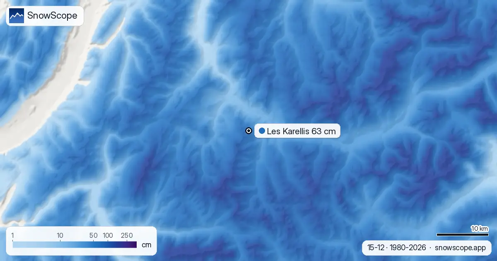
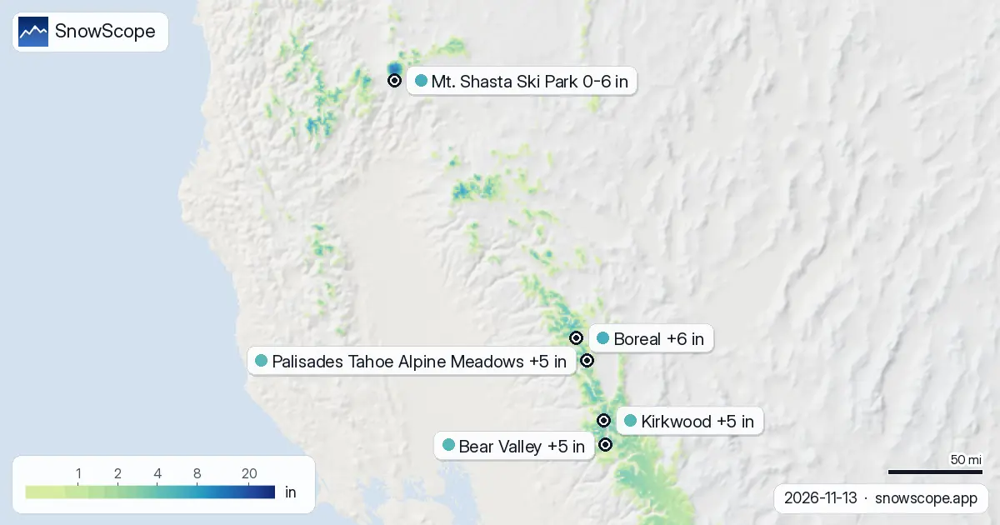
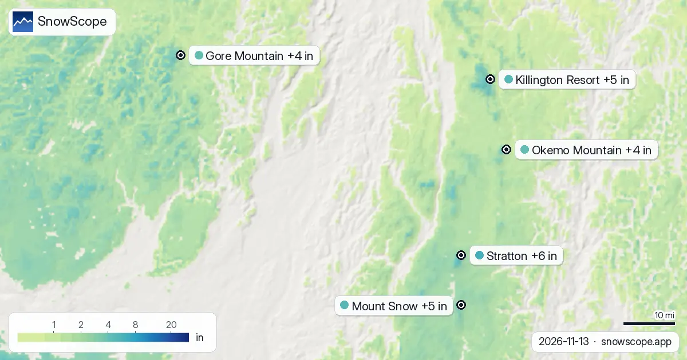
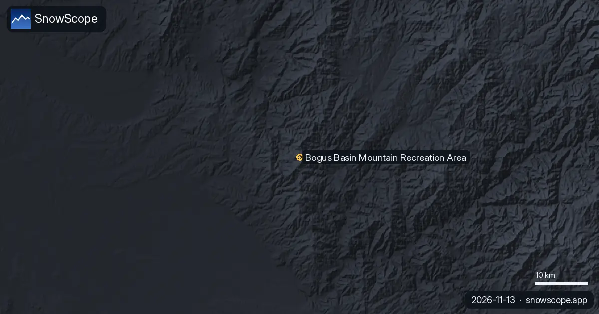
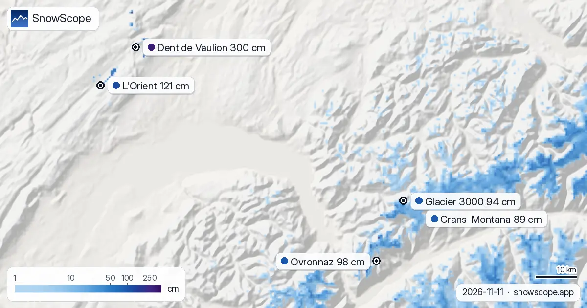
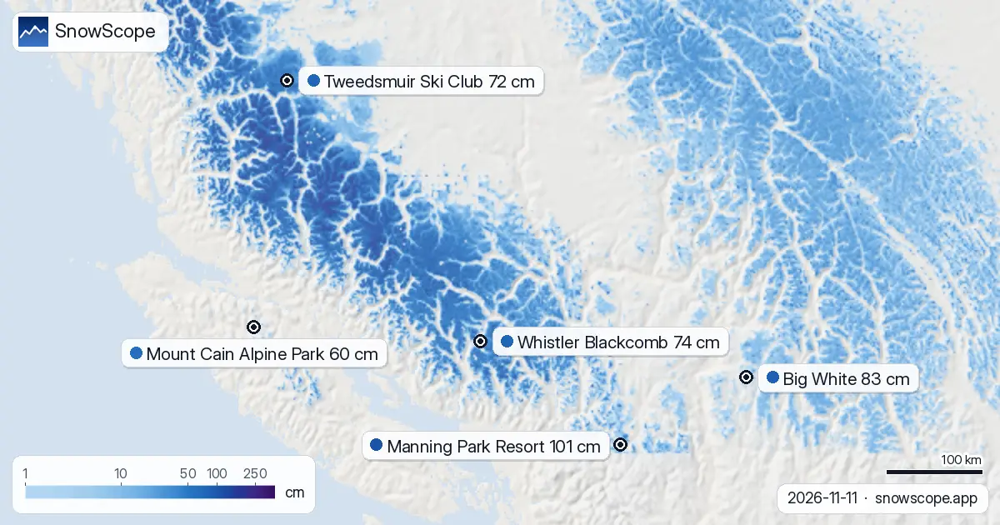
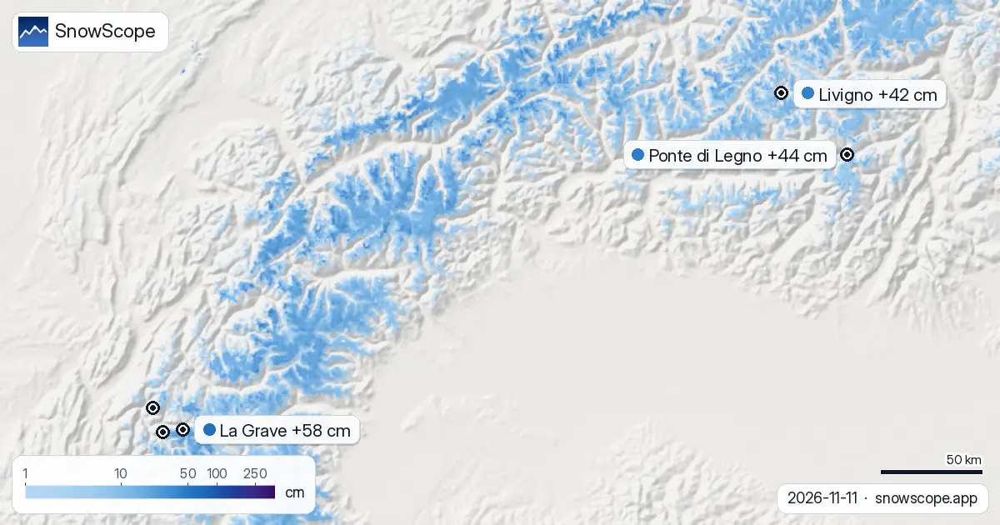

تقارير التلج
تقارير يومية ديال التلج للي كيتزلجو: فين كاين التلج، شنو جاي، وفين تمشي تتزلج، من الخريطة ديال التلج ديال SnowScope ومحطات القياس. كل رقم جاي من المعطيات ديال داك النهار.

Hemavan فدجنبر: 82 سم فالوسط نهار 15 دجنبر عادي، وكل شتوة فيها 30 سم فنص دجنبر؛ أعمق دجنبر فالمحطات الشمالية اللي قارنا.

التيكي ديال النهار ف Brighton كيبدا ب 72 $ ل 2026/27 إلا شريتي بكري. العلو ديال التلج ف نص المحطة عادة كيكون 37 in (94 cm) نهار 15 دجنبر، مقابل 25 in (64 cm) ف Park City.

قارن بين Grandvalira والمحطات الصبليونية في دجنبر 2026 من ناحية العلو ديال التلج، العلو ديال ليفات، والأثمنة اللي كتبدا من 49.00 EUR.

Pitztaler Gletscher فدجنبر: 87 سم فالوسط نهار 15 دجنبر عادي، تلج دجنبر كثر من زمان؛ السكيباس ديال نهار 77 EUR و 6 أيام 410 EUR.

16 محطة ديال التزحلق فأمريكا رخاص، مرتبين على حساب فرص التلج ف دجنبر من 46 شتوة اللي فاتو، مع الأثمنة ديال النهار اللي تأكدنا منهم: من 49 $ فوسط السيمانة حتى 125 $ وأكثر.

إيلا بغيتي سيمانة د التزلج للعائلة فديسمبر فـ Astún-Candanchú بتكلفة ناقصة، وجد راسك لأواخر ديسمبر فين كيكون التلج مزيان فـ 67 % من الشتوات اللي فاتو فالجهة الفوقانية.

ألمانيا فدجنبر: Zugspitze والفوق ديال Fellhorn كان فيهم 30 سم فنص دجنبر فعلى الأقل 9 شتوات من 10؛ Sudelfeld و Brauneck و Feldberg نادرا.

محطة Puy-Saint-Vincent كاتبازي باجي ديال نهار واحد للبالغين بـ 44 EUR مع تلج صحيح فـدجنبر الفوق، ومقارنة هادي مع الجار الكبير ديالها Serre Chevalier.

ف الـ46 شتوة اللي فاتو عندنا، عند mid-mountain ديال Grand Targhee كان ديما عندها 20 in (50 cm) ولا كثر نهار 15 دجنبر. التيكي ديال نهار واحد أونلاين كيتراوح بين $125 و$180.

Oppdal فدجنبر: 60 سم لتحت (585 م) نهار 15 دجنبر عادي، و 93 % ديال الشتوات فيهم 30 سم فنص دجنبر، أحسن من التحت ديال Trysil.

كاتوفر غريمنز-زينال 71 كم ديال البيستات وتلج مضمون في العلو للرحلة ديالك في دجنبر، مع باصات ديال 6 أيام بـ CHF 339,00.

النمسا قبل نوال: Galtür ب 258 EUR و Kühtai ب 269 EUR ل 6 أيام، و 30 سم فكثر من 90 % ديال الشتوات؛ الكلاسييات أغلى، والمحطات الصغار مقامرة.

كتخطط لرحلة ف دجنبر لـ Baqueira Beret؟ شوف التاريخ ديال التلج عندنا، أثمنة التذاكر اللي كتبدا من 70,00 € لـ 'باس' ديال نهار واحد، وكيفاش كتقارن مع Astún-Candanchú.

كنديرو تصنيف للمحطات ديال التلج ففرنسا على حساب احتمالات التلج فدجنبر وأثمنة البيست، كيبداو من 36,00 EUR لليوم للكبار فـ Les Karellis.

فأوكايمدن، دجنبر كيعطي 18 سم فنص الجبل فشهر عادي، مقابل 44 سم ف فبراير و53 سم فمارس. أشنو كتقول 46 شتوة على الشهر المزيان للتزحلق.

Galtür فدجنبر: 55 سم فالوسط نهار 15 دجنبر عادي، 93 % ديال الشتوات فيهم 30 سم فنص دجنبر؛ النهار فالموسم الهادي 55,50 EUR حتى ل 18 دجنبر.

Geilo فدجنبر: 57 سم فالوسط نهار 15 دجنبر عادي، و 96 % ديال الشتوات فيهم 30 سم فنص دجنبر؛ النهار من 590 NOK (تقريبا 56 EUR).

Grandvalira غالبا ما كيتم التسويق ليها كوجهة رخيصة للتزلج فديسمبر، ولكن العلو ديال التلج الطبيعي فالباز فالمتوسط غير 9 سم فالشتوات اللي فاتو.

Hemsedal فدجنبر: 70 سم فالوسط و 106 سم فالفوق نهار 15 دجنبر عادي، ولكن 32 سم لتحت؛ و Geilo حداها من 590 NOK للنهار.

Hintertuxer Gletscher فدجنبر: 98 سم ف 3245 م و 52 سم فالوسط نهار 15 دجنبر عادي؛ السكيباس ديال نهار 82 EUR، و 6 أيام 399 EUR.

قارن حظوظ التلج فـ دجنبر وأثمنة الفورفي المراقبة ابتداءً من 40.00 EUR فـ محطات التزلج الإيطالية لرحلة الويكاند بالطوموبيل.

السكي ف Kühtai فدجنبر: 60 سم فالتحت (1939 م) نهار 15 دجنبر عادي، والسكيباس ديال 6 أيام فالموسم الهادي ب 269 EUR حتى ل 18 دجنبر.

Les 2 Alpes كاتوصل ل 3511 م باش تضمن التلج ف دجنبر 2026، مع فورفي ديال 6 أيام للكبار ب 266.50 EUR.

Les Karellis كتوفر 45 كم ديال البيست وواحد الباس ديال 6 أيام للكبار بـ 191,00 EUR مع احتمال ديال 98 % ديال التلج فوسط الجبل فآخر دجنبر.

Levi فدجنبر: 38 سم نهار 15 دجنبر عادي، 91 % ديال الشتوات فيهم 30 سم فسيمانة نوال، وتلج كثر من زمان؛ النهار 60 EUR، و 57 EUR أونلاين.

تزلج فـ Livigno بـ 51,50 EUR للنهار قبل 18 دجنبر، فاش كيوصل العلو ديال التلج فالقمة لـ 30 سم فـ 100 % من الشتوات اللي فاتو.

فميشليفن، 89 % من الشتوات ماعندهمش تقريبا تلج نهار 15 دجنبر (أقل من 5 سم). أشنو كتقول 46 شتوة على التزحلق فالأطلس المتوسط ف دجنبر.

Montgenèvre عندها 56 سم ديال التلج فالمعتاد فديسمبر فالباز ديالها، وهادشي كيخلي السواق ديال الويكاند يلقاو تلج كتر من Sestriere اللي فجهة خرى ديال الحدود.

السكي ف Obertauern فدجنبر: 43 سم نهار 15 دجنبر عادي فالوسط، والسكيباس ديال 6 أيام ب 331 EUR قبل نوال.

أوكايمدن فنص دجنبر: 16 سم فنص الجبل فشتوة عادية، 50 سم ولا كثر فغير 11 % من الشتوات. تاريخ بتاريخ، أشنو كتقول 46 شتوة.

أوكايمدن بعيدة ب50 كم بخط مستقيم من مراكش. كيفاش تنجح ف ويكاند ديال تزحلق ف دجنبر: فوقاش تمشي، شنو هي فرص التلج، أشنو كنعرفو على الأثمنة.

Les 3 Vallées: 75.70 € فالنهار من 5 حتى 18 دجنبر 2026. أوكايمدن: بلا تعريفة رسمية أونلاين، 16 سم فنص الجبل فنص دجنبر. المقارنة الصادقة.

Pila فوق Aosta كتقترح تمن موحد ديال 60.00 EUR للنهار مع تلج مضمون فدجنبر فالجهة الفوقانية.

المحطات ديال Saas-Fee كتوصل لـ 3556 م فين التاريخ ديال التلج ديالنا كيبين بلي 100 % من الشتوات اللي فاتو كان عندهم على الأقل 30 سم ديال التلج فمنتصف ديسمبر.

12 محطة شمالية فدجنبر: Hemavan و Hemsedal و Geilo كان فيهم 30 سم فالوسط فنص دجنبر ف 96 حتى 100 % ديال الشتوات؛ النهار ففنلندا 58-60 EUR.

فرص التلج ف دجنبر من 46 شتوة وأثمنة النهار اللي تأكدنا منهم: Ski Cooper 49 $، Les 3 Vallées 75.70 €، Oukaïmeden بلا تعريفة رسمية. فين كتخدم نهار تزحلق رخيص ف دجنبر.

اكتشف البيستات الهادئة فـ St-Luc Chandolin فين العلو ديال التلج فـ نص الجبل وصل لـ 30 سم فـ 98 % من الشتوات اللي فاتو فـ أواخر شهر دجنبر.

Trysil فدجنبر: 44 سم فالوسط نهار 15 دجنبر عادي، و 83 % ديال الشتوات فيهم 30 سم فنص دجنبر؛ الأثمنة متبدلة، حجز بكري.

Valloire-Valmeinier كتوفر على 131 كم ديال البيست، واحتمال 98 % يكون العلو ديال التلج 30 سم فـ وسط المحطة فـ نص دجنبر.

Zugspitze فدجنبر: 122 سم ف 2627 م نهار 15 دجنبر عادي، السكيباس ديال نهار أونلاين 70,50 EUR؛ Garmisch-Classic لتحت ب 69 EUR وتلج قل بزاف.

Mölltaler Gletscher فدجنبر: 66 سم فأول تيليسييج (2103 م) و 128 سم فالوسط نهار 15 دجنبر عادي؛ 6 أيام فالموسم الهادي ب 332 EUR.

Mt. Baker ف دجنبر: 46 in (116 cm) ديال التلج ف وسط الجبل ف 15 دجنبر العادي، والتيكي من الاثنين للخميس بـ98.80 $، كيتباع غير نهار بنهاره فالكيشة.

واش المبتدئ اللي كيخاف يقدر يتيق فـ Courmayeur ف شهر دجنبر، فاش العلو ديال التلج ف الوسط كيوصل ف المعدل لـ 60 سم ف الشتوات اللي فاتو؟

Åre فدجنبر: 40 سم فالوسط نهار 15 دجنبر عادي، و 89 % ديال الشتوات فيهم 30 سم فنص دجنبر، ولكن نقص كبير فالفوق من الثمانينات.

المساحة اللي فيها التلج: 49467 ميل² (128120 كم²) نهار 11 نونبر، 49050 ميل² (127040 كم²) اليوم، 64429 ميل² (166870 كم²) متوقعة نهار 16 نونبر. هادا هو …

من دابا حتى ل 16 نونبر كنتسناو 5 إنش (12 سم) ف Stowe، 4 إنش (11 سم) ف Bolton Valley Resort و 4 إنش (10 سم) ف Sugarbush Resort. الأرقام ديال المحطات …

201390 كم²: هادي هي المساحة اللي فيها التلج اللي كيحسبها الموديل ديالنا فغرب كندا اليوم. آخر صورة صافية لكل بلاصة، حتى ل 13 نونبر: هادشي اللي كتحتافظ …

حالة التزلج ف Deer Valley نهار 13 نونبر 2026: باقي ما كاين حتى تلج بصح فالأرض، تقريبا 4 بوصات حدا القمة مع العاصفة ديال الويكاند، الشتا فالجيهة الواطية ديال East Village تحت تقريبا 6,700 حتى ل 7,600 قدم، و11 بوصة لفوق فالسيمانة.

واش هادي بداية مزيانة ديال الشتا فشمال شرق ميريكان؟ التلج ديال اليوم ف 4 محطات فشمال شرق ميريكان، مقارن مع نفس التاريخ فكل وحدة من 46 ديال الشتوات …

من دابا حتى ل 16 نونبر كنتسناو 13 إنش (34 سم) ف Bear Valley، 13 إنش (34 سم) ف Dodge Ridge و 13 إنش (33 سم) ف Badger Pass. كلمة على الأرقام: القيم …

توقعات التلج ف Park City (Utah) نهار 13 نونبر 2026: تقريبا ما كاين حتى تلج فالأرض دابا، تقريبا 5 بوصات حدا القمة مع العاصفة ديال الويكاند وحد ديال التلج من 7,400 حتى ل 7,700 قدم، الشتا لتحت، وتقريبا 12 بوصة لفوق فالسيمانة.

Stratton حسب العلو، من الموديل ديالنا: الفوق 4 إنش (10 سم) (3881 قدم / 1183 م)، الوسط 2 إنش (6 سم) (2936 قدم / 895 م)، التحت 1 إنش (2 سم) (1991 قدم / …

واش الخزان ديال التلج كيتعمر بحال العادة؟ قارنّا التلج ديال اليوم ف 5 محطات فغرب كندا مع نفس التاريخ فكل وحدة من 46 ديال الشتوات اللي فاتو. 1 منهم …

توقعات التلج ف Alpental نهار 13 نونبر 2026: تقريبا 1 بوصة فالجيهة العليا ديال الجبل، الشتا تقريبا حتى للقمة هاد الويكاند مع حد ديال التلج حدا 5,400 حتى ل 5,600 قدم، ومن بعد 4 حتى ل 5 بوصات ديال الشتا والتلج مخلطين لفوق السيمانة الجاية.

تشييك ديال التلج ف Bogus Basin للمتزلجين ديال Boise نهار 13 نونبر 2026: باقي ما كاين حتى تلج فالأرض، الشتا والتلج الفازݣ هاد الويكاند مع حد ديال التلج حدا 6,300 حتى ل 6,800 قدم، ومن بعد هوا أبرد وتقريبا 8 بوصات فالقمة فالسيمانة الجاية.

39 إنش (99 سم) فالجهة الفوقانية: هادا علاش Telluride هي اللولة فاللائحة ديالنا. العلو ديال اليوم، التلج الجديد ف 72 ساعة، التوقعات: ملي كنجمعوهم، …

خريطة البيستات ديال سيليان (Hochpustertal) مع الطبقة ديال التلج ديالنا نهار 13 نونبر 2026: 8.6 سنتيمتر فالقمة ف 2399 متر، الجناب اللي لتحت بلا تلج، وسيمانة ديال الشتا والتلج مخلطين مع الحد ديال التلج حدا 1,800 حتى ل 2,000 متر.

Revelstoke توقعات التلج: حتى ل 10–21 سم متوقعة حتى ل 16 نونبر (غرب كندا). ف Whistler Blackcomb، علو الجليد غادي يكون بين 1500 م و 2700 م نهار 13 …

حالة التلج ف Silvretta Montafon نهار 13 نونبر 2026: 4.5 سنتيمتر فالقمة ف 2421 متر، الوسط والواد بلا تلج، تقريبا 40 سنتيمتر جايين لفوق هاد السيمانة، والشتا فالواد تحت 1,500 متر.

بلاغ التلج فليخ تسورس نهار 13 نونبر 2026: تقريبا 6 سنتيمتر فالفوق (2436 متر) وفالوسط، والو فليخ ف 1430 متر. هاد السيمانة 42 سنتيمتر لفوق على حساب التوقع ديالنا، حتى ل 91 سنتيمتر على حساب توقعات أخرى، والشتا مخلطة بالتلج حدا 1400 متر. وعلاش ليخ هي الجهة اللي فيها التلج كثر فالأرلبرگ.

الموديل مع التوقعات فجبال الألب اليوم كيعطيو التلج الطري الجديد. شنو تلبس، شنو تدي وإمتى تتزلج، محطة بمحطة. النصائح ديال الماتيريال جاية بتأكد عالي: …

العلو ديال التلج فسانت أنطون آم أرلبرگ نهار 13 نونبر 2026: تقريبا 1 سنتيمتر فالفوق (2642 متر)، 5 سنتيمتر فالوسط، والو فالدوار. هاد السيمانة 42 سنتيمتر فالفوق و33 سنتيمتر فالوسط، والشتا تحت تقريبا 1480 متر. شحال ديال التلج خاص المنحدرات القاصحين.

Dévoluy الاتجاه ديال التلج: يقدر يوصل ل 24–32 سم حتى ل 16 نونبر (جبال الألب). حتى ل 16 نونبر، التوقعات ديالنا كتعطي 35 سم ف Orcières Merlette، 33 سم …

من نهار 11 نونبر التغطية ديال التلج دازت من 39090 كم² ل 76100 كم²؛ ونهار 16 نونبر التوقعات كتعطي 57910 كم². Pfelders فيها أعمق طبقة ديال التلج فجبال …

المحطات ديال التزلج فالأطلس ماخازنينش التلج فالبيستات اليوم. التلج مخزون غير فالقمم العالية: تقريبا 40 كم² ديال الأرض، حتى ل 9 سم فالعمق. فالمغرب، …

بلاغ التلج فأوبرگورگل نهار 13 نونبر 2026: تقريبا 20 سنتيمتر فالفوق (3024 متر)، 5 سنتيمتر فالوسط، والو فالتيليسييجات اللي لتحت (1784 متر). توقع السيمانة: 34 سنتيمتر لفوق، 21 سنتيمتر لتحت، الحد ديال التلج حدا 1700 متر. ومعاه البداية العادية ديال الموسم.

العلو ديال التلج فسولدن نهار 13 نونبر 2026: تقريبا 9 سنتيمتر فالفوق (3245 متر)، 5 سنتيمتر فالوسط، والو فالواد ف 1346 متر. 25 سنتيمتر متوقعة لفوق هاد السيمانة، والشتا تحت تقريبا 1620 متر. الكلاسيي مقابل الدوار، مع 46 شتوة اللي فاتو.

التلج اللي طاح ففال طورانس، 13 نونبر 2026: 27 سنتيمتر فالفوق (3175 متر) و17 سنتيمتر ف 2498 متر ف 7 أيام؛ العلو ديال التلج فالأرض 50 سنتيمتر و8 سنتيمتر. 7 أيام الجاية: 86 سنتيمتر فالفوق، 73 سنتيمتر ف 2498 متر، والحد ديال التلج بعيد تحت الدوار. الموسم العادي من 46 شتوة.

العلو ديال التلج فشاموني نهار 13 نونبر 2026، علو بعلو: والو فالقاع ديال الواد، 1 سنتيمتر ف 2001 متر، 12 سنتيمتر فالفوق ديال بريفون-فليجير (2486 متر)، من 5 حتى ل 24 سنتيمتر فالفوق ديال لي كراند مونطي (2768 متر). تقريبا متر متوقع لفوق هاد السيمانة، والشتا فالواد. شحال كيوصل التلج فشاموني عادة، من 46 شتوة.

الاختيارات ديالنا هي La Grave, Pfelders و Les Deux Alpes: شفنا العلو ديال التلج ديال اليوم، والتلج الجديد ديال 72 ساعة، والتوقعات. من البلايص …

العلو ديال التلج فإيشگل نهار 13 نونبر 2026: تقريبا 5 سنتيمتر فالفوق (2868 متر)، 4 سنتيمتر فالوسط، والو فالواد ف 1352 متر. حتى ل 42 سنتيمتر فالقمة هاد السيمانة، والشتا فالپازناون تحت تقريبا 1570 متر. ومعاه الواد مقابل القمة ف 46 شتوة.

تقرير التلج ديال لي مونوير نهار 13 نونبر 2026: 28 سنتيمتر فالفوق (2838 متر)، والو فالأرض ف 2112 متر ولا ف 1386 متر. تقريبا 80 سنتيمتر متوقعة فالفوق ف 7 أيام، والحد ديال التلج بين 1500 و1700 متر. علاش فال طورانس، 450 متر لفوق فنفس الواد، عندها كثر.

علو 0 °C هو اللي كيقرر واش الجبال غادي تخزن التلج ولا تطيح فيها الشتا: فالأيام الجاية التوقعات ديالنا كتحطو بين 2230 م و 2820 م فجبال البرانس. نهار …

حالة التلج فتينيي نهار 13 نونبر 2026: 42 سنتيمتر فالفوق (3447 متر)، 12 سنتيمتر ف 2503 متر، الواد بلا تلج ف 1559 متر، و99 سنتيمتر متوقعة فالفوق ف 7 أيام، مع الشتا تحت 1700 متر تقريبا. المقارنة مع 46 شتوة اللي فاتو.

التلج الجديد ف La Grave: 61 سم ف 72 ساعة اللي فاتو، فيهم 3 سم ف 24 اللخرة. الموديل ديال التلج ديالنا كيحط دابا تقريبا 78 سم فالجهة الفوقانية. …

الموديل ديال التلج ديالنا كيتوقع بلي Whistler Blackcomb غاتستقبل 88 سم ديال التلج الجديد حتى لتنين 16 نونبر 2026، وغاتكون هي الرائدة عالميا.

التوقعات ديالنا كتحط علو 0 °C فشمال شرق ميريكان بين 0 قدم (0 م) و 4593 قدم (1400 م) فالأيام اللي جايين. نهار الخميس 12 نونبر، فالساعات اللي سخونة …

واش كاين تلج أكثر من هادي عام؟ قارنّا اليوم مع 12 نونبر ديال الشتا اللي فاتت ف 4 محطات فشمال شرق ميريكان: 0 منهم فيهم تلج أكثر دابا، حسب الموديل ديال …

بين 1380 م و 3410 م: هنا فين التوقعات ديالنا كتحط علو 0 °C فغرب كندا فالأيام الجاية. فالساعات اللي سخونة كثر الحد ديال التلج، تقريبا 300 م تحت، كيطلع …

خرائط اليوم كتشوف جوج سيمانات للقدام فجبال البرانس، من 13 نونبر حتى ل 26 نونبر. جايين من جوج الموديلات العالمية اللي كيوصلو لجوج سيمانات، ECMWF و …

فين غادي يطيح التلج فشمال شرق ميريكان بين 13 نونبر و 26 نونبر، وشحال؟ سولنا جوج الموديلات العالمية اللي كيوصلو لجوج سيمانات، ECMWF و GFS، خلينا الوسط …

14 يوم ديال التلج الجديد فخريطة وحدة، من 13 نونبر حتى ل 26 نونبر، لكل جبل فغرب كندا: هادشي اللي كيتوقعو جوج الموديلات العالمية اللي كيوصلو لجوج …

العلو كيبدل كلشي ف Telluride: الموديل ديالنا كيعطي 0 إنش (0 سم) فالتحت (8734 قدم / 2662 م)، 2 إنش (6 سم) فالوسط (10620 قدم / 3237 م) و 38 إنش (96 سم) …

هاهي الخرائط الجديدة ديال جوج سيمانات الجايين فجبال الألب، من 13 نونبر حتى ل 26 نونبر: التلج الجديد المتوقع على الأرض، مقري من جوج الموديلات العالمية …

هاهي الخرائط الجديدة ديال جوج سيمانات الجايين فالأطلس (المغرب)، من 13 نونبر حتى ل 26 نونبر: التلج الجديد المتوقع على الأرض، مقري من جوج الموديلات …

الخرائط ديالنا لجوج سيمانات كتبين فين خاصو يطيح التلج الجديد فغرب ميريكان بين 13 نونبر و 26 نونبر، حسب جوج الموديلات العالمية اللي كيوصلو لجوج …

Whistler Blackcomb، 116 سم ديال التلج: العلو ديال اليوم فالجهة الفوقانية (12 نونبر). 162 سم: هادا هو التلج اللي كاين اليوم فالجهة الفوقانية ديال …

Kirkwood الاتجاه ديال التلج: يقدر يوصل ل 16 إنش حتى ل 15 نونبر (غرب ميريكان). حتى ل 15 نونبر، التوقعات ديالنا كتعطي 23 إنش (58 سم) ف Mt. Shasta Ski …

Mount Cain Alpine Park، التلج الجديد مقارنة مع المنطقة: 15 سم ف 72 ساعة (12 نونبر). المساحة اللي فيها التلج دازت من 281250 كم² نهار 10 نونبر ل 255860 …

Cimarron Mountain Club، 39 إنش ديال التلج: العلو ديال اليوم فالجهة الفوقانية (12 نونبر). 42 إنش (106 سم): هادا هو التلج اللي كاين اليوم فالجهة …

بلاغ التزلج ديال Purgatory Resort (دورانغو، كولورادو) من الموديل ديال التلج ديالنا: 3 بوصات (7 سنتيمتر) فالقمة، التحت والوسط بلا تلج، من 4 حتى ل 7 بوصات ديال التلج الجديد متوقعين ف 7 أيام الجاية، وكيفاش كتكون شتوة عادية فبورغاتوري.

Mount Cain Alpine Park: شحال جاي ديال التلج؟ 37 سم حتى ل 15 نونبر. شحال ديال التلج جاي فغرب كندا، وفين؟ حتى ل 15 نونبر، التوقعات ديالنا كتعطي 83 سم ف …

الموديل ديالنا كيقسم Piau-Engaly على تلاتة ديال العلوات: 2 سم فالفوق (2527 م)، 0 سم فالوسط (2144 م)، 0 سم فالتحت (1762 م). ف 72 ساعة اللي فاتو، طاح …

تقرير التلج فالأطلس (المغرب)، 12 نونبر. المحطات ديال التزلج فالأطلس اليوم: حتى تلج فالبيستات. التلج غير فالقمم اللي فالفوق: تقريبا 40 كم² ديال الأرض …

تقرير التلج فجبال البرانس، 12 نونبر. إلا شفنا حتى ل 15 نونبر، التوقعات كتجيب 33 سم ف Cauterets Cirque du Lys، 29 سم ف Piau-Engaly و 25 سم ف Gourette. …

حالة التلج فلا روزيير فالحساب ديال الموديل ديال 11 نونبر: 24 سنتيمتر فالفوق (2799 متر)، الوسط والدوار بلا تلج، وتوقع ديال 7 أيام ب 108 سنتيمتر فالفوق و61 سنتيمتر فالوسط. الجهة المشمسة ديال بوتي-سان-بيرنار بالأرقام.

التلج فألبي ديفيرو (أوسولا، بييمونتي) حسب الموديل ديالنا: 2 سنتيمتر فالفوق (2201 متر)، والو لتحت، 36 سنتيمتر ديال التلج الجديد متوقعين فالفوق ف 7 أيام الجاية. المحطة الصغيرة بلا طوموبيلات والشتوة العادية ديالها بالأرقام.

بلاغ التلج ديال ليزارك من الموديل ديالنا: 34 سنتيمتر فالفوق (3205 متر)، 2 سنتيمتر فالوسط، التحت بلا تلج، وحتى ل 69 سنتيمتر ديال التلج الجديد متوقعين فالفوق ف 7 أيام الجاية. شنو كيكون عند ليزارك عادة فنونبر ودجنبر.

حالة التلج فميريبيل من الموديل ديالنا ديال 11 نونبر: 24 سنتيمتر فالفوق (2920 متر)، 1 سنتيمتر فالوسط، الواد بلا تلج، وتوقع ديال 99 سنتيمتر فالفوق و58 سنتيمتر فالوسط ف 7 أيام الجاية. الشتوة العادية ديال ميريبيل بالأرقام.

خريطة البيستات ديال إيزولا 2000 مع التلج ديال اليوم: 9 سنتيمتر فالفوق، 7 سنتيمتر فالوسط، 2 سنتيمتر فالتحت من بعد 31 سنتيمتر فسيمانة، كيفاش مقسمين القطاعات بيليفوس وسان-سوفور ولومبارد، وشنو كتجيب شتوة عادية.

باقي ما كاينش التلج فأوكايمدن: 0 سنتيمتر فالتلاتة ديال العلوات، والو فآخر 7 أيام، والو فالسيمانة الجاية. شنو كيجيب نونبر عادي للأطلس الكبير وفوقاش تخطط للتزلج.

على علو 1308 م ف Dent de Vaulion، 0 سم ديال اليوم كثر من اللي جاب هاد التاريخ ف 34 من 46 ديال الشتوات اللي فاتو (العادي: 0 سم): كمية مزيانة ديال الما …

المساحة البيضا فالخريطة دازت من 45820 كم² (9 نونبر) ل 38440 كم² اليوم، والتوقعات كتقول 46730 كم² نهار 14 نونبر. Glacier 3000: +26 سم ف 72 ساعة، منهم …

Les Deux Alpes، توقعات التلج مقارنة مع المنطقة: 51 سم حتى ل 14 نونبر. المساحة اللي فيها التلج دازت من 45820 كم² نهار 9 نونبر ل 38440 كم² اليوم، …

تقرير التلج فجبال الألب، 11 نونبر. تلاتة ديال المعطيات، لائحة وحدة: العلو ديال التلج ديال اليوم، والتلج الجديد ديال 72 ساعة، والتوقعات كيوريو Dent de …

التلج تبدل من نهار 9 نونبر، من 40 كم² ل 20 كم² اليوم؛ ونهار 14 نونبر التوقعات ديالنا كتعطي 10 كم². اليوم البيستات ديال الأطلس عريانين. غير القمم …

واش كاين تلج أكثر من هادي عام؟ قارنّا اليوم مع 11 نونبر ديال الشتا اللي فاتت ف 4 محطات فجبال البرانس: 0 منهم فيهم تلج أكثر دابا، حسب الموديل ديال …

من الموديل ديال التلج والتوقعات ديالنا، اليوم فجبال البرانس كيجيب تلج رقيق ديال بداية الموسم و هوا سخون يقدر يخلي قشرة. لتحت، محطة بمحطة: شنو تدي، …

تقرير التلج فشمال شرق ميريكان، 11 نونبر. حتى ل 14 نونبر التوقعات كتعطي 15 إنش (38 سم) ف Okemo Mountain، 12 إنش (30 سم) ف Stratton و 11 إنش (29 سم) ف …

فالأيام الجاية علو 0 °C فغرب ميريكان خاصو يتحرك بين 8333 قدم (2540 م) و 13780 قدم (4200 م)، حسب التوقعات ديالنا. فأسخن وقت فالنهار الحد ديال التلج، …

تقرير التلج فغرب ميريكان، 11 نونبر. حتى ل 14 نونبر التوقعات كتعطي 17 إنش (43 سم) ف Mt. Shasta Ski Park، 15 إنش (39 سم) ف Kirkwood و 14 إنش (36 سم) ف …

واش كاين تلج أكثر من هادي عام؟ قارنّا اليوم مع 11 نونبر ديال الشتا اللي فاتت ف 4 محطات فغرب ميريكان: 4 منهم فيهم تلج أكثر دابا، حسب الموديل ديال …

واش هادي بداية مزيانة ديال الشتا فغرب ميريكان؟ 5 محطات فغرب ميريكان، 46 ديال الشتوات اللي فاتو، تاريخ واحد: ها كيفاش كيتقارن اليوم. فوق العادي بوضوح: …

فين تمشي تتزلج فغرب ميريكان؟ تلاتة ديال المعطيات، لائحة وحدة: العلو ديال التلج ديال اليوم، والتلج الجديد ديال 72 ساعة، والتوقعات كيوريو Telluride, …

38 سم ف 72 ساعة: هادا هو التلج الجديد اللي جا ل Tweedsmuir Ski Club. Tweedsmuir Ski Club زادت 38 سم ديال تلج جديد ف 72 ساعة اللي فاتو، منهم 35 سم ف …

الموديل ديال التلج والتوقعات ديالنا لليوم فغرب كندا كيوريو التلج الطري الجديد، عاصفة ديال التلج جاية، صباح فيه الجليد وعشية فيها التلج رطب و هوا سخون …

وزنّا التلج اللي كاين فالأرض، والتلج الجديد ديال 72 ساعة، واللي غادي تزيد التوقعات، واخترنا Whistler Blackcomb, Tweedsmuir Ski Club و Manning Park …

الموديل ديال التلج ديالنا كيتوقع حتى ل 58 سم ديال التلج الجديد ف La Grave، فرنسا، حتى نهار السبت 14 نونبر 2026. شوف فين بلاصة أخرى متوقع يطيح التلج.

فوق 1500 م دايرين بتوبقال، الأرض بقات بيضا 94 يوم فشتوة 2025-26، أكبر رقم ف26 شتوة ديال الصور ديال الساتليت. حتى لفين نزل التلج، فوقاش مشى، وكيفاش كتتقارن هاد الشتوة مع 2008-09 ومع العوام الناشفين.